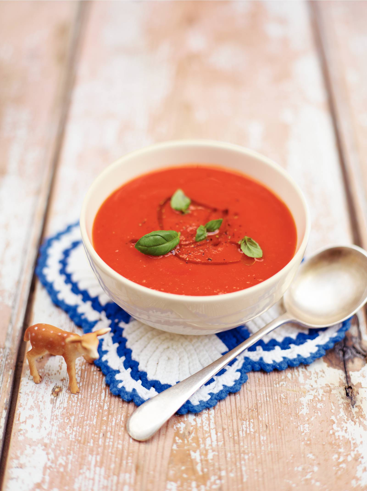

Verse tomatensoep
Soep van tomaten en rode paprika
Ingrediënten
- 2 tenen (knoflook)
- 2 el traditonele olijfolie)
- 15 g verse basilicum
- 1 geroosterde rode paprika's in pot
- 1.5el rodewijnazijn
- 4 blikken tomatenblokjes
- 1 liter groenteboullion van tabley
- 4 t olijfolie extra vierge
Bereigswijze
- Snijd de knoflook fijn. Verwarm een grote (soep)pan op middelhoog vuur.
Giet er een scheut olijfolie in en voeg de knoflook toe.
Bak in enkele minuten licht goudbruin. Pluk de blaadjes basilicum en snijd de stelen fijn.
Voeg de basilicumstelen toe en bak nog 1 min.
- Snijd de paprika's in stukken. Roer de paprika erdoor, draai het vuur omlaag en bak 5 min.
tot de paprika begint te karamelliseren. Voeg wat zout en peper toe en de azijn.
Laat deze verdampen en voeg vervolgens de tomaatstukjes en bouillon toe.
- Breng aan de kook, draai het vuur omlaag en doe de deksel op de pan.
Laat de soep 45 min. doorkoken tot hij iets is ingedikt. Pureer met een staafmixer tot een gladde soep.
Proef de soep en breng op smaak met zout en peper.
Verdeel de soep over kommen en bestrooi met de gescheurde blaadjes basilicum. Besprenkel met extra vierge olijfolie en serveer.

Tip! Lekker met stokbrood.